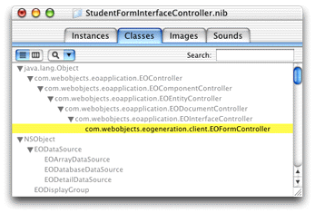
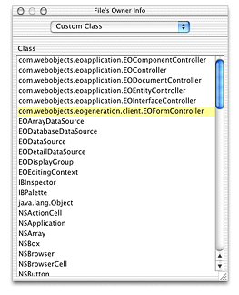

You must do a few things to make interface files created with the nondirect Java Client technique work within dynamically generated user interfaces.
Open the nib file from within Project Builder and click the
Classes tab of the nib file window. View the classes in inheritance
mode (the vertical list), and click the disclosure triangle next
to java.lang.Object to
reveal the Java Client classes. Continue clicking disclosure triangles
up through com.webobjects.eoapplication.EOInterfaceController as shown
in Figure 14-1.
Figure 14-1 Classes pane in the nib file window
To use a nib file in a Direct to Java Client application, the class must be the exact class you use to load the interface. So, if you want to use the nib file in a form controller, you'll use EOFormController. To use it in a query controller, use EOQueryController. These classes are not automatically defined in the EnterpriseObjects palette in Interface Builder, so you need to add them.
Select com.webobjects.eoapplication.EOInterfaceController in
the classes list and press Return. This subclasses EOInterfaceController
and thus inherits the targets and outlets you need for the new class.
Name the new subclass com.webobjects.eogeneration.client.EOFormController as
shown in Figure 14-1.
Now that you've created a new class, you must associate
the nib file with it. To do this, go back to the Instances pane
of the nib file window and click File's Owner. Choose Show Info from
the Tools menu and choose Custom Class from the pop-up menu. In
the list of classes, select com.webobjects.eogeneration.client.EOFormController as
shown in Figure 14-2.
Figure 14-2 Assign the custom subclass to File's Owner
Finally, associate the nib file's controller class (it's
associated .java class)
with the same package with which other client-side classes in your
application are associated:
package edu.admissions.client;
Save the nib file.